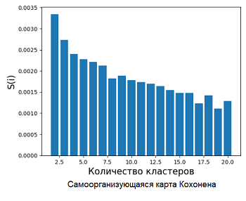

Прогнозирование материнского поведения в регионе по данным опросов на основе технологий больших данных
-
Источник
"Прогнозирование материнского поведения в регионе по данным опросов на основе технологий больших данных" — тема выпускной квалификационной работы.Материнство и беременность — важная тема в жизни каждой женщины. При этом в период беременности и после родов у матери ослаблен иммунитет, а также проявляется повышенная чувствительность нервной системы к различного рода возбудителям, как хороших, так и плохих.Проведение профилактических мероприятий и мониторинг здоровья матери могут быть положительно сказаны на состоянии как самой матери, так и её детей. Проблема состоит в определении негативных факторов, профилактика которых должна производиться, и причин возникновения этих факторов, а также определении факторов, положительно влияющих на состояние матери.Основным истоником информации об образе жизни и состоянии человека является сам человек, поэтому в качестве источника данных для данной работы были взяты данные опросов матерей. -
Цель и задачи
Цель работы — выявление причин, приводящих к ухудшению состояния матери, и факторов, положительно влияющих на материнское здоровье, с помощью модели машинного обучения для прогнозирования материнского поведения.Задачи:
— проанализировать набор данных и преобразовать его;
— выбрать алгоритмы машинного обучения для построения модели;
— осуществить предварительную обработку данных, чтобы они были пригодны для работы выбранных алгоритмов;
— построить модель;
— определить наиболее значимые факторы;
— рассмотреть модель на предмет выявления причинно-следственных связей, позволяющих сделать достоверные выводы. -
Методы
К-средних
Агломеративная кластеризация
Самоорганизующаяся карта Кохонена
Дерево решений
Ассоциативные правила -
Инструменты
Язык программирования Python и его библиотеки:
NumPy
Pandas
Matplotlib
Scikit-learn
Sklearn-som
Apyori -
Результат
Для всех трёх штатов факторами, положительно влияющими на здоровье матерей, являются условия для предложения тестирования на ВИЧ женщине, которая его не проходила. Причины ухудшения состояния матерей в рассматриваемых штатах — отсутствие предложения пройти тест на ВИЧ. Для второй группы штата Колорадо к положительным факторам добавляются условия для отсутствия депрессии у матери за 3 месяца до беременности, к отрицательным — наличие депрессии. При этом стоит выделить, что отказ от прохождения тестирования на ВИЧ не является причиной депрессии, так как это условие наблюдается у обеих групп.Полученные данные позволяют выявить проблемы в здравоохранении в различных регионах. Например, было выявлено, что в штате Нью-Йорк и Нью-Йорк Сити большинство женщин отказывается от тестирования на ВИЧ, что может навредить как здоровью матери, так и ребёнка. -
Перейти на страницу с листингом кода (ссылка)
-
Скачать файл с ВКР (ссылка)
-
Описание
После анализа набора данных (ссылка), опубликованного Центром по контролю и профилактике заболеваний (CDC) США, было принято решение сгенерировать на его основе новый набор данных, так как источник содержит уже обработанные результаты анкетирования, которые содержат показатели по каждому конкретному вопросу в штате, при условии, что система мониторинга оценки риска беременности (PRAMS) подразумевает опрос матери по полному списку вопросов. Исходя из этого обаботанные данные лишают возможности получить достоверные знания. Код генерации данных размещён в разделе ниже.Код генерации данных размещён в разделе ниже. В сгенерированном наборе каждая запись представляет собой одного респондента, то есть набор ответов на опросник, вопросы которого были взяты из источника, как и количество опрошенных в каждом рассматриваемом штате. Подробнее о сгенерированном датасете можно узнать на его странице в kaggle (ссылка)Следом производился выбор методов и алгоритмов, оптимальных как для самих данных (точность результатов), так и для аппаратного обеспечения (персональный компьютер со средними техническими показателями). В соответствии с источником данные были сгенерированы для всех штатов, где на 2011 год действовала система PRAMS — это 25 штатов и Нью-Йорк Сити. Интерактивная карта отражающая распространение PRAMS в США на 2011 год педставлена ниже. Однако этнический состав США, как и в России, разнообразен. К тому же законы в разных регионах страны могут отличаться, как и экономика, менталитет, климат и т.д. Поэтому разумнее рассматривать обстановку в каждом регионе отдельно.
Процесс поиска положительно и отрицательно влияющих факторов, а также причино-следственных связей был разделён на 3 этапа:
1) Кластеризация (разделенеие на группы) респондентов в каждом штате.
2) Классификация полученных групп для получения характеристики каждой из них.
3) Поиск ассоциативнх правил для выявления причино-следственных связей в поведении каждой группы матерей.Метод кластеризации выбирался на основе оценок силуэта для тестового набора, состоящего из 5 тысяч записей. Наиболее подходящими стуктуе данных стали методы агломеративной кластеризации, к-средних и самоорганизующаяся карта Кохонена. Для этих методов была построена столбчатая диаграмма оценок силуэта (качества кластеризации) для различного количества кластеров (изображения ниже). Для агломеративной кластеризации была построена ещё одна столбчатая диаграмма оценок силуэта, расположенная справа, только для пяти кластеров с использованием различных подходов подсчёта расстояния.Показатели метода К-средних превосходили два других метода, поэтому для кластеризации респондентов целесообразнее использовать К-средних. В данной работе желательна интерпретация модели, потому что это даёт возможность увидеть вопросы, которые являются решающими при определении респондентов в группу. При этом на работу алгоитмов должно хватать вычислительной мощности. Ввиду этого для решения задачи классификации были выбраны деревья решений. Для поиска ассоциативных правил наиболее часто используют алгоритм Apriori, который обладает свойством анти-монотонности, что позволяет обрабатывать большие объёмы данных за разумное время. Время обработки важно, поэтому для прогнозирования материнского поведения был выбран он. Более подробно о рассматриваемых в работе методах и их выборе, а также о других разделах, можно узнать, скачав файл с выпускной квалификационной работой по ссылке выше.Процесс, описанный ранее, будет рассмотрен на примере штата Колорадо. Сначала был произведн отбор респондентов данного штата, затем была выведена столбчатая диаграмма оценок силуэта (изображение слева) при делении записей на различное число кластеров методом К-средних. При увеличении количества кластеров, коэффициент силуэта растёт, однако при разделении респондентов на 2 группы показатель является наивысшим, поэтому разделение будет производится на 2 кластера. Принцип, по которому можно разделить респондентов на две группы, был получен с помощью дерева классификации, представленного ниже. На дереве видно, что матерей можно разделить на две группы по ответу на один вопрос: Показатель того, предлагалось ли пройти тест на ВИЧ женщине, не прошедшей тест.Поиск ассоциативных правил производился для обеих групп штата Колорадо. Здесь будут рассмотрены правила только для первой группы. Так как правил получается несколько сотен, было решено рассматривать только первые 15 с наибольшим значением поддержки. В результате для первой группы респондентов штата Колорадо был получен список правил, представленный в таблице ниже. В этой таблице в качестве условий и следствий выводятся ответы и следом подряд номера вопросов для этих ответов.Правило Поддержка Достоверность Лифт YES196 -> YES195 0.883969 0.883969 1.0 YES195 -> NO (UNCHECKED)32 0.522141 0.522141 1.0 0145 -> YES195 0.518389 0.518389 1.0 YES195 -> NO63 0.516581 0.516581 1.0 YES87 -> YES195 0.515442 0.515442 1.0 NO7 -> YES195 0.513901 0.513901 1.0 YES195 -> NO (UNCHECKED)81 0.5137 0.5137 1.0 YES195 -> YES94 0.513298 0.513298 1.0 YES195 -> NO187 0.512896 0.512896 1.0 YES195 -> YES75 0.511958 0.511958 1.0 YES195 -> YES130 0.511824 0.511824 1.0 YES195 -> YES73 0.511757 0.511757 1.0 YES195 -> YES (CHECKED)92 0.511757 0.511757 1.0 NO128 -> YES195 0.511355 0.511355 1.0 NO (UNCHECKED)110 -> YES195 0.511288 0.511288 1.0 Наиболее достоверным и с высоким уровнем поддержки является правило: если женщина, которой предложили тестирование на ВИЧ, отказалась от него, то ей предлагалось, как женщине не прошедшей этот тест, пройти его. Это правило тривиально. Оно не несёт полезной информации. Далее по списку идёт правило: если женщине, не прошедшей тест на ВИЧ, предлагалось его пройти, то страховка Medicaid не покрыла предоставление медицинской услуги. Следующее правило: если женщина не имела предыдущих живорождений, то ей, как не прошедшей тест на ВИЧ предлагалось его пройти. Остальные правила интерпретировались аналогичным образом.Выявление причинно-следственных связей в материнском поведении позволяет:
• государству выстроить более эффективную социальную политику в отношении матерей (внедрение социальных программ, профилактических мероприятий и т.д.);
• фармацевтическим компаниям разрабатывать маркетинговую стратегию по продаже витаминов;
• производителям детских продуктов (авто кресел, детского питания и т.д.) также более эффективно использовать рекламу;
• производителям контента для беременных и мам улучшить качество продукта.
Используемый в работе датасет довольно старый, однако сравнение результатов прошлых годов с текущими (на сегодняшний день неопубликованными в открытом доступе) даёт возможность оценить результативность социальной политики государства в отношении матерей.
Данные 2011 года пригодятся для сравнения материнского поведения детей и родителей, а также эти данные помогут выявить факторы, из-за которых будущее поколение откажется материнства или наоборот, захочет родить детей.Для улучшения качества получаемых знаний в представленом способе обработки данных можно использовать другие методики перевода ответов в числовые значения. Вместо умножения на номер вопроса, как это производилось в этой работе, можно каждому вопросу присвоить собственный коэффициент на этапе разработки вопроса. Также можно разбить вопросы на смысловые группы, в каждой из которых подсчитывать балл, и кластеризовать респондентов, используя меньшее количество параметров.